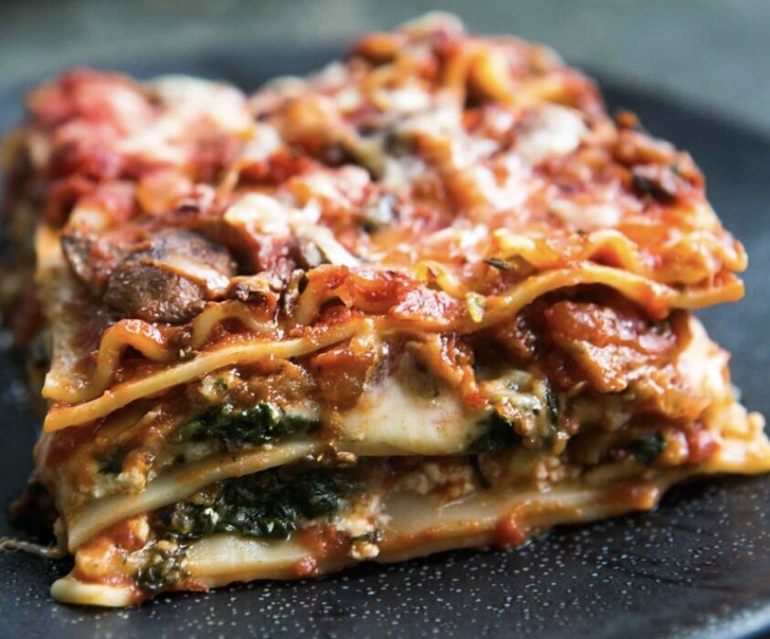

Lasagna

This is a tasty recipe found in an ancient tomb of bat like creatures
Here how to make it, without using sonar
- First buy all the ingredients and have 'em ready to roll
- Cook the noodles until Al Dente'
- Grind everything else up but the cheese, and combine and bring to a boil, order don't matter a lick
- Layer sauce, noodles and cheese over and over again, until you run out
- Bake at 350 degrees for half an hour, pull it out, let it sit for a bit, cut and eat